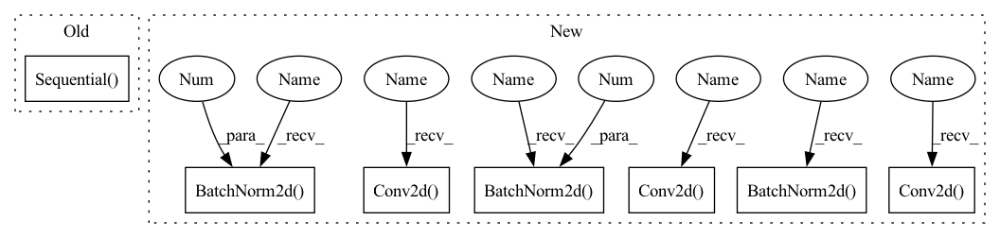

Pattern ID :40769

Before Change
nn.LeakyReLU(0.2),
nn.Conv2d(out_channels, out_channels, 3)]
self.features = nn.Sequential(*block)
self.avgpool = nn.AdaptiveAvgPool2d((512, 512))
self.classifier = nn.Sequential(
After Change
// Conv0
nn.Conv2d(3, 64, kernel_size=3, stride=1, padding=1, bias=False),
nn.LeakyReLU(negative_slope=0.2, inplace=True),
nn.Conv2d(64, 64, kernel_size=4, stride=2, padding=1, bias=False),
nn.BatchNorm2d(64),
nn.LeakyReLU(negative_slope=0.2, inplace=True),
// Conv1
nn.Conv2d(64, 128, kernel_size=3, stride=1, padding=1, bias=False),
nn.BatchNorm2d(128),
nn.LeakyReLU(negative_slope=0.2, inplace=True),
nn.Conv2d(128, 128, kernel_size=4, stride=2, padding=1, bias=False),
nn.BatchNorm2d(128),
nn.LeakyReLU(negative_slope=0.2, inplace=True),
// Conv2
nn.Conv2d(128, 256, kernel_size=3, stride=1, padding=1, bias=False),
nn.BatchNorm2d(256),
nn.LeakyReLU(negative_slope=0.2, inplace=True),
nn.Conv2d(256, 256, kernel_size=4, stride=2, padding=1, bias=False),
nn.BatchNorm2d(256),
nn.LeakyReLU(negative_slope=0.2, inplace=True),
// Conv3
nn.Conv2d(256, 512, kernel_size=3, stride=1, padding=1, bias=False),
nn.BatchNorm2d(512),
nn.LeakyReLU(negative_slope=0.2, inplace=True),
nn.Conv2d(512, 512, kernel_size=4, stride=2, padding=1, bias=False),
nn.BatchNorm2d(512),
nn.LeakyReLU(negative_slope=0.2, inplace=True),
// Conv4
nn.Conv2d(512, 512, kernel_size=3, stride=1, padding=1, bias=False),
nn.BatchNorm2d(512),
nn.LeakyReLU(negative_slope=0.2, inplace=True),
nn.Conv2d(512, 512, kernel_size=4, stride=2, padding=1, bias=False),
In pattern: SUPERPATTERN
Frequency: 3
Non-data size: 7
Instances
Fragment ID: 115156702
Project Name: lornatang/esrgan-pytorch
Commit Name: 8ef58f0f8458d618a99fffa07433927c9b9ef70f
Time: 2020-10-12
Author: liuchangyu1111@gmail.com
File Name: esrgan_pytorch/model.py
M Class Name: Discriminator
N Class Name: Discriminator
M Method Name: __init__(1)
N Method Name: __init__(2)
M Parent Class: nn.Module
N Parent Class: nn.Module
M File Name: esrgan_pytorch/model.py
N File Name: esrgan_pytorch/model.py
M Start Line: 140
M End Line: 177
N Start Line: 26
N End Line: 74
'>
Before Change
nn.LeakyReLU(0.2),
nn.Conv2d(out_channels, out_channels, 3)]
self.features = nn.Sequential(*block)
self.avgpool = nn.AdaptiveAvgPool2d((512, 512))
self.classifier = nn.Sequential(
After Change
// Conv1
nn.Conv2d(64, 128, kernel_size=3, stride=1, padding=1, bias=False),
nn.BatchNorm2d(128),
nn.LeakyReLU(negative_slope=0.2, inplace=True),
nn.Conv2d(128, 128, kernel_size=4, stride=2, padding=1, bias=False),
nn.BatchNorm2d(128),
nn.LeakyReLU(negative_slope=0.2, inplace=True),
// Conv2
nn.Conv2d(128, 256, kernel_size=3, stride=1, padding=1, bias=False),
nn.BatchNorm2d(256),
nn.LeakyReLU(negative_slope=0.2, inplace=True),
nn.Conv2d(256, 256, kernel_size=4, stride=2, padding=1, bias=False),
nn.BatchNorm2d(256),
nn.LeakyReLU(negative_slope=0.2, inplace=True),
// Conv3
nn.Conv2d(256, 512, kernel_size=3, stride=1, padding=1, bias=False),
nn.BatchNorm2d(512),
nn.LeakyReLU(negative_slope=0.2, inplace=True),
nn.Conv2d(512, 512, kernel_size=4, stride=2, padding=1, bias=False),
nn.BatchNorm2d(512),
nn.LeakyReLU(negative_slope=0.2, inplace=True),
// Conv4
nn.Conv2d(512, 512, kernel_size=3, stride=1, padding=1, bias=False),
nn.BatchNorm2d(512),
nn.LeakyReLU(negative_slope=0.2, inplace=True),
nn.Conv2d(512, 512, kernel_size=4, stride=2, padding=1, bias=False),
'>
Fragment ID: 115155678
Project Name: lornatang/esrgan-pytorch
Commit Name: 8ef58f0f8458d618a99fffa07433927c9b9ef70f
Time: 2020-10-12
Author: liuchangyu1111@gmail.com
File Name: esrgan_pytorch/model.py
M Class Name: Discriminator
N Class Name: Discriminator
M Method Name: __init__(1)
N Method Name: __init__(2)
M Parent Class: nn.Module
N Parent Class: nn.Module
M File Name: esrgan_pytorch/model.py
N File Name: esrgan_pytorch/model.py
M Start Line: 140
M End Line: 177
N Start Line: 26
N End Line: 74
'>
Before Change
def __init__(self):
super(LinearModel, self).__init__()
self.resnet_rgb = resnet18(pretrained=False)
self.resnet_rgb.fc = nn.Sequential(
nn.Linear(512, 512), nn.BatchNorm1d(512), nn.ReLU(True))
self.layer_steering = nn.Sequential(
nn.Linear(512, 256), nn.BatchNorm1d(256), nn.ReLU(True),
nn.Linear(256, 128), nn.BatchNorm1d(128), nn.ReLU(True),
nn.Linear(128, 1)
After Change
super(LinearModel, self).__init__()
// similar to the self-driving car model from Nvidia in 2016: https://developer.nvidia.com/blog/deep-learning-self-driving-cars/
self.layer_cnn = nn.Sequential(
nn.Conv2d(in_channels= 3, out_channels= 32, kernel_size=3, stride=2, padding=1), //size: 224-->112
nn.BatchNorm2d(32),
nn.ReLU(inplace=True),
nn.Conv2d(in_channels= 32, out_channels= 64, kernel_size=3, stride=2, padding=1), /레-->56
nn.BatchNorm2d(64),
nn.ReLU(inplace=True),
nn.Conv2d(in_channels= 64, out_channels= 128, kernel_size=3, stride=2, padding=1), /ኔ-->28
nn.BatchNorm2d(128),
nn.ReLU(inplace=True),
nn.Conv2d(in_channels= 128, out_channels= 256, kernel_size=3, stride=2, padding=1), /ቸ-->14
nn.BatchNorm2d(256),
nn.ReLU(inplace=True),
nn.Conv2d(in_channels= 256, out_channels= 512, kernel_size=3, stride=2, padding=1), /ቪ-->7, final size: batch_size*512*7*7
nn.BatchNorm2d(512),
'>
Fragment ID: 115155657
Project Name: caipeide/autorace
Commit Name: 06e4c00bb704ca792481a7c06c052bfe2898aab6
Time: 2020-12-01
Author: pcaiaa@connect.ust.hk
File Name: ai_drive_models.py
M Class Name: LinearModel
N Class Name: LinearModel
M Method Name: __init__(1)
N Method Name: __init__(1)
M Parent Class: nn.Module
N Parent Class: nn.Module
M File Name: ai_drive_models.py
N File Name: ai_drive_models.py
M Start Line: 108
M End Line: 110
N Start Line: 110
N End Line: 127
'>
Before Change
def __init__(self, embedding_size=512):
super(MobileFaceNet, self).__init__()
scale = 2
self.layers = nn.Sequential(
ConvBlock(3, 64 * scale, kernel=(3, 3), stride=(2, 2), padding=(1, 1)),
ConvBlock(64 * scale, 64 * scale, kernel=(3, 3), stride=(1, 1), padding=(1, 1), groups=64),
DepthWise(64 * scale, 64 * scale, kernel=(3, 3), stride=(2, 2), padding=(1, 1), groups=128),
Residual(64 * scale, num_block=4, groups=128, kernel=(3, 3), stride=(1, 1), padding=(1, 1)),
DepthWise(64 * scale, 128 * scale, kernel=(3, 3), stride=(2, 2), padding=(1, 1), groups=256),
Residual(128 * scale, num_block=6, groups=256, kernel=(3, 3), stride=(1, 1), padding=(1, 1)),
DepthWise(128 * scale, 128 * scale, kernel=(3, 3), stride=(2, 2), padding=(1, 1), groups=512),
Residual(128 * scale, num_block=2, groups=256, kernel=(3, 3), stride=(1, 1), padding=(1, 1)),
)
self.conv_sep = ConvBlock(128 * scale, 512, kernel=(1, 1), stride=(1, 1), padding=(0, 0))
self.features = GDC(embedding_size)
self._initialize_weights()
After Change
self.conv_45 = Residual_Block(128, 128, kernel=(3, 3), stride=(2, 2), padding=(1, 1), groups=512)
self.conv_5 = Residual(128, num_block=2, groups=256, kernel=(3, 3), stride=(1, 1), padding=(1, 1))
self.sep = nn.Conv2d(128, 512, kernel_size=1, bias=False)
self.sep_bn = nn.BatchNorm2d(512)
self.prelu = nn.PReLU(512)
self.GDC_dw = nn.Conv2d(512, 512, kernel_size=7, bias=False, groups=512)
self.GDC_bn = nn.BatchNorm2d(512)
self.features = nn.Conv2d(512, embedding_size, kernel_size=1, bias=False)
self.last_bn = nn.BatchNorm2d(embedding_size)
def forward(self, x):
x = self.conv1(x)
'>
Fragment ID: 115156723
Project Name: bubbliiiing/arcface-pytorch
Commit Name: 8a0975f6a466c9b581a2518791353adaab04cbd2
Time: 2022-02-16
Author: 47347516+bubbliiiing@users.noreply.github.com
File Name: nets/mobilefacenet.py
M Class Name: MobileFaceNet
N Class Name: MobileFaceNet
M Method Name: __init__(2)
N Method Name: __init__(2)
M Parent Class: Module
N Parent Class: Module
M File Name: nets/mobilefacenet.py
N File Name: nets/mobilefacenet.py
M Start Line: 86
M End Line: 99
N Start Line: 63
N End Line: 88